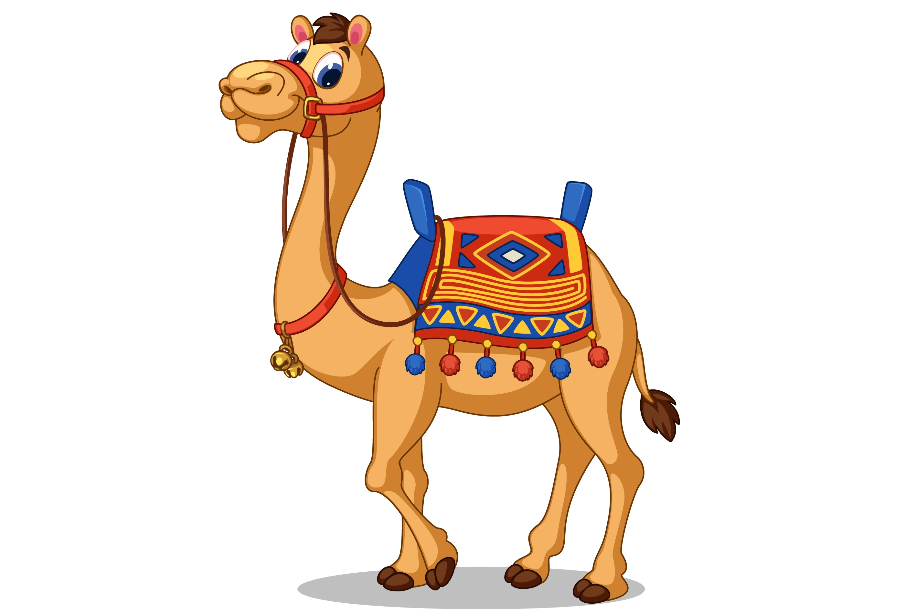
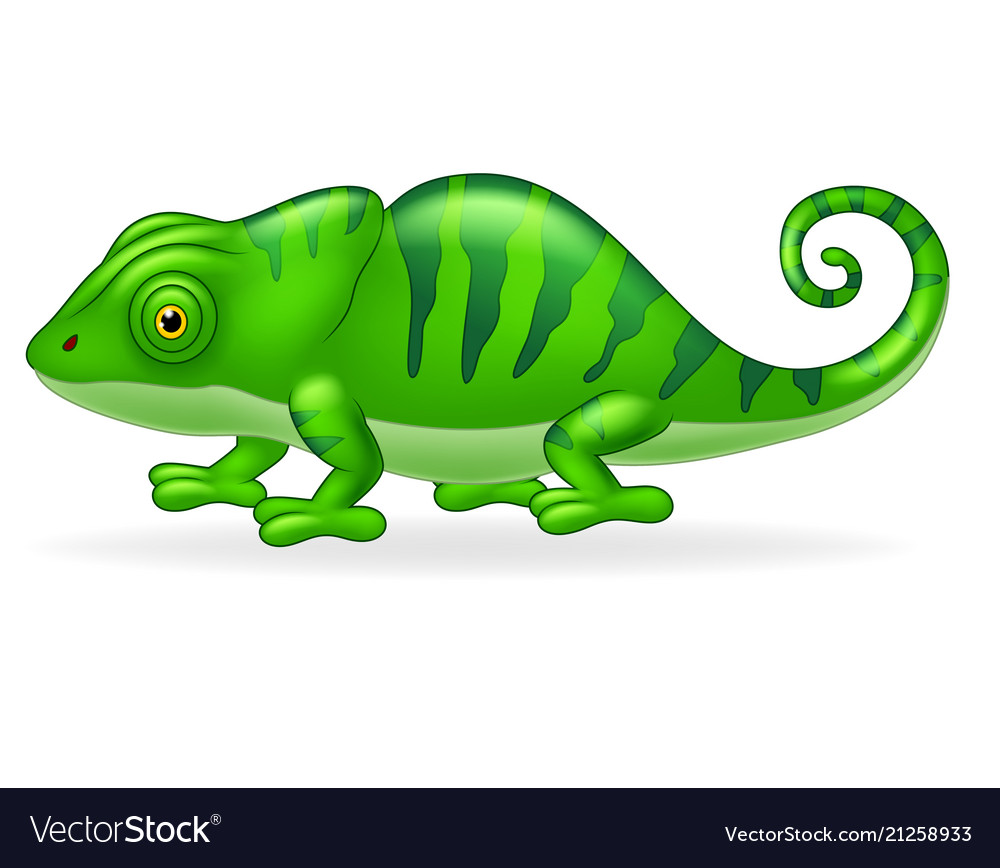
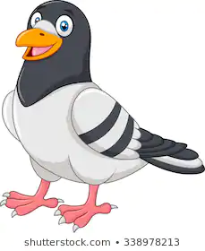
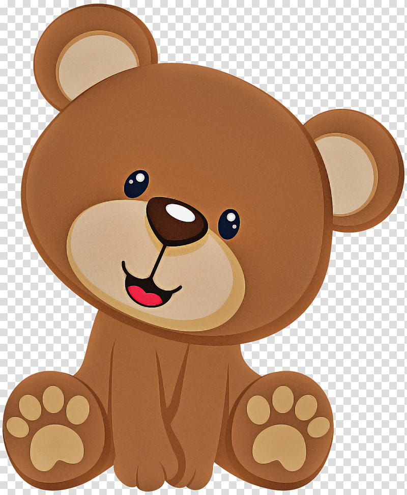

Camels’ humps are not used to store water. Even though they come from hot climates, their humps store fat and also help the rest of their bodies to stay cooler. When needed, the fat will be converted to food or water. The word ‘camel’ comes from an Arabic word, when it’s literally translated, it means beauty. Don’t ever try and say that camels are ugly! They need to stay hydrated in the desert, so it’s no surprise that camels can drink as much as 40 gallons of water at once. Considering it’s not being stored in their humps, that’s pretty amazing.
Most lizards have fairly unremarkable feet. In the majority of species, they're comprised of four to five toes that can move independently of each other—just as ours do. But evolution has taken chameleon limbs in a very different direction. A chameleon’s foot consists of two fleshy pads that oppose each other. One pad contains three digits that are fused together while the other has two fused digits. Up in the tree canopies where they live, these feet come in handy. Like a set of pincers, the opposing pads on each foot firmly clamp down onto vines and branches. Also, whereas most lizards have sprawling limbs, chameleons usually hold their legs almost directly underneath their bodies. This gives them an athletic gait for a modern reptile—walking this way keeps the center of gravity directly above the feet, which helps the animals stay balanced.
Pigeons are incredibly complex and intelligent animals. ... Pigeons are renowned for their outstanding navigational abilities. ... Pigeons are highly sociable animals. ... Pigeons mate for life, and tend to raise two chicks at the same time. Both female and male pigeons share responsibility of caring for and raising young.
The term bear-hug was first recorded in 1846. The Teddy Bears' Picnic song was originally called The Teddy Bear Two Step. The Oxford English Dictionary dates the first use of the term teddy bear to 1906. In 1902 in Germany, Steiff launched “Bear 55 PB”, the first toy bear with jointed arms and legs.
About Us Follow Us    